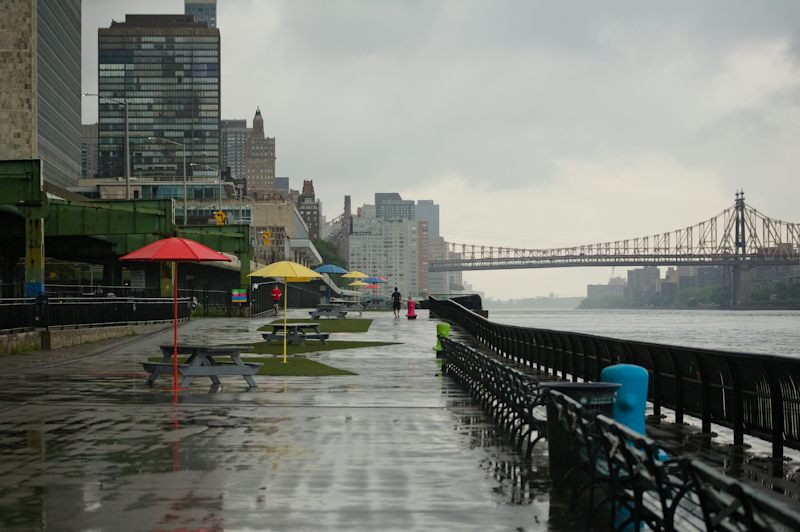
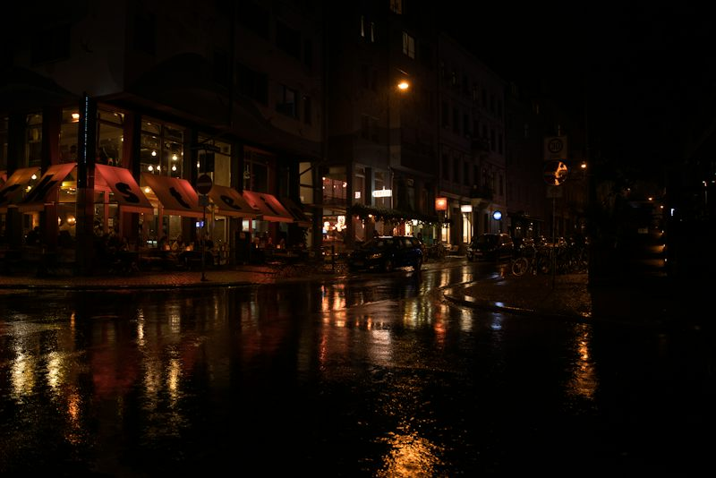

Teacher · Session card (Ficha de Sesión)
| Campo | Valor |
|---|---|
| Nivel / MCER | Intermedio 2 · GT English Path Nivel 08 · B1.2 · modo Interacción (+ Mediación ligera) · online grupo / 1:1 |
| Bloque | 1 · CHANGE · sesión 6 de 32 · contexto V (vida cotidiana, con casos de trabajo ≈50/50) · arquitectura SINGLE_TOPIC |
| Objetivo | Planear un evento, viaje o turno con su riesgo y su Plan B, y decir qué pasará si algo cambia. |
| Punto de lengua (uno) | Primer condicional: if + present simple, will + verbo base, para consecuencias previsibles de un cambio: If it rains, we will move the event inside. (afirmativo, negativo con won’t, pregunta con What will you do if…?). |
| Límite | Sin segundo/tercer condicional, unless, as long as, when vs if avanzado, present perfect continuous, reported questions, pasiva completa, have got. |
| Léxico nuevo (12) | forecast · risk · cancel · backup plan · indoors · in case · heavy rain · check the forecast · take a risk · make sure · wait and see · move it inside |
| Reciclaje (S01) | update · booking · delay · status · pending · reschedule · confirm · send an update · cause a delay · at the last minute (10/10 reaparecen hoy: VOC-01, lectura, listening, misión) |
| Dinámicas (4 familias) | VOC-01 The Impostor Collocation (IMPOSTOR) · GRM-03 Sentence Auction (SUBASTA, mecánica → meaningful) · SPK-08 Personal Record (CONTRARRELOJ) · LIS-12 Silent Ending (APUESTA) |
| Riesgo / temperatura | Medio · Spicy (desacuerdo ligero y respetuoso sobre “plan B”; sin política, religión ni temas personales sensibles; casos de gente ficticia) |
| Disagreement hook | “Always have a plan B.” vs “Plan B is a waste of time.” |
| Evidencia | Misión “The Plan B Tree”: 3 casos × 5 movimientos (15), éxito ≥12/15 sin leer, incluyendo ≥2 oraciones If…, will… por caso; marca personal del SPK-08. |
Warm-up · The Rain Dial

Go ahead, use a backup plan, or cancel?
“Always have a plan B.” — “Plan B is a waste of time.”
Set the chance of rain, then decide for each plan
0 / 4 decidedTeacher notes · §1 Warm-up
Pedagógica
- Es activación, NO gramática: acepta cualquier forma (“I go”, “I will go”, “I would”). No corrijas el condicional; lo anotas en silencio para contrastar en §3.
- Lee el escenario con el “…” como pausa. Luego el desacuerdo: pide UNA razón por lado, máximo 40 segundos. Límite del nivel: sin debate formal ni persuasión; es una opinión corta con razón.
- Grupo: cada quien ajusta los 4 diales en privado y compara con su pareja (los dials parten con un valor distinto a propósito). 1:1: el alumno decide; tú decides distinto en 2 casos y le pides que te convenza.
- Máximo 4 minutos. Tema seguro: eventos y clima, nada personal. Si alguien cuenta una anécdota sensible (salud, dinero, familia), redirige a “a friend’s plan”.
Engagement
- “Sixty percent rain: is that a reason to cancel? Your boss says yes, your family says no.”
- Pregunta anécdota: “¿Cuál fue el plan al aire libre que se arruinó por el clima (o que salió bien por tener plan B)?”
Crecimiento
- Venta/mejora: “Hoy aprendes la frase que más usan los supervisores y coordinadores: If X happens, we will Y. Es la base de un plan de contingencia en inglés.”
- Registra cuántas veces el alumno usa espontáneamente will con if: línea base para el progreso de §8.
Vocabulary · The Impostor
Meet the 12 chunks — tap, listen, say
0 / 12 seenFive notes on the board. One is the impostor.
Team 0 pts1. Read the five collocations. 2. One sounds natural in Spanish but is NOT English — find it (+1). 3. Say WHY it is wrong and fix it (+2 in total). 4. Use one real note in your own sentence.
Complete the messages
Teacher notes · §2 Vocabulary
Pedagógica
- VOC-01 · IMPOSTOR. Reglas (di exactamente esto): “Five notes. One is fake. Find it. Say why. Fix it.” Punto por cazarla; punto doble si explica por qué suena falsa. El impostor es un calco plausible del español (hacer un plan, lluvia fuerte, perder el evento, hacer un riesgo): nunca una palabra absurda.
- Paso A (2 min): que lo escuchen y lo digan en voz alta; la lista incluye 12 ítems nuevos. Los 10 chunks de S01 (update, booking, delay, status, pending, reschedule, confirm, send an update, cause a delay, at the last minute) reaparecen en las rondas 3 y 4 y en lectura/listening/misión: señálalo.
- Grupo: equipos de 2–3 deciden en 20 s antes de tocar. 1:1: el alumno es el equipo y tú puedes inventar un 2º impostor (“Make your own fake note”). Cierre en voz alta: el marcador de pantalla.
- Corrección típica: do/make a plan → have a plan, strong rain → heavy rain, lose an event → miss an event, make a risk → take a risk. Pronunciación: forecast /ˈfɔːrkæst/ (acento en FOR), risk /rɪsk/, indoors /ˌɪnˈdɔːrz/.
Engagement
- “Which fake fooled you? That’s the one a Spanish brain loves.” Los calcos que los engañaron son su lista personal de errores.
- Cierre: “The team caught __ impostors and explained __.”
Crecimiento
- Venta/mejora: “Los calcos se corrigen solo cuando los detectas; por eso trabajamos collocations, no palabras sueltas.”
- Progreso visible: guarda los impostores que cayeron; vuelven en S23 (VOC-01 con más exigencia: ahora el alumno inventa el impostor).
Grammar · If This, Then That
Three forecast cards. What do you notice?
If it stays dry, we will have the lunch outside.
If it rains, we will move the event inside.
If the forecast is still bad, we won’t start at nine.
The If / Then tree — build your own sentence
Form
If + present, will + base verb
If it rains, we will move it inside. No will after if.
Use
A possible change → its likely result
Plans, risks, backup plans, updates.
+ / − / ?
…we won’t go. · What will you do if…?
The if part can go first (comma) or second (no comma).
Pick a change on the left.
Choose the best form
Sentence Auction — buy only the good sentences
Balance 100 ptsYou have 100 points. Each sentence has a price. Buy a good one: +price. Buy a bad one: −2 × price. Pass a bad one and fix it: +5. Say your own version of a good one you bought: +5.
Your own tree — say three sentences
Choose a real plan for this weekend. Say 3 sentences: If …, I will … / If …, I won’t … / What will you do if …? (ask your partner).
Teacher notes · §3 Grammar
Pedagógica
- Explicación ≤5 min en capas. Qué es: una posibilidad futura y su resultado probable. Cómo: if + present simple, will/won’t + base. Para qué: planes, riesgos, avisos. Afirmativo, negativo y pregunta (What will you do if…?). Una sola regla de oro: nunca will después de if (error típico de hispanohablantes: “If it will rain”).
- Descubre (2 min): deja que ellos digan qué pasa después de IF. Respuesta: present simple, la lluvia aún no ocurre.
- Mecánica ≤1/3 del bloque: Práctica A (2 min) + parte mecánica de la subasta. Meaningful: la subasta (decidir qué comprar y arreglar). Comunicativa: “Your own tree” (2 min).
- GRM-03 · SUBASTA (3 reglas): “You have 100 points. Buy only good sentences. A bad one costs double.” En grupo, equipos pujan; en 1:1 el alumno compra y tú haces de subastador. Cierra en voz alta: “My balance is __.”
- Errores sembrados en la subasta: if + will, would en el resultado (2º condicional: está FUERA del nivel, solo se reconoce como error), will calls, will to send, falta de -s en rains.
Engagement
- Premia producir lenguaje: arreglar y decir la versión propia vale puntos; velocidad no vale nada.
- “You just wrote your first contingency plan in English.”
Crecimiento
- Venta/mejora: el primer condicional vuelve en S23 (Plan B laboral) y S29 (decisiones de compra): “En 17 sesiones lo usarás para recomendar y decidir.”
- Evidencia: ¿arregla el alumno If it will rain? Anótalo; si lo repite en §6, es el error a trabajar.
Reading · Three Days, Three Plans
What do the texts say?
Teacher notes · §4 Reading
Pedagógica
- Lectura de 3 min: textos de 54–58 palabras (≤60). Que lean un día y respondan; no leas en voz alta por ellos. La 6ª pregunta es “Not in the text” a propósito: lectura precisa (el texto no dice que la caminata se cancele).
- Respuestas: sports hall · Thursday · they use the old road (delay ≈40 min) · if the delay is more than one hour · it gets dark early · Not in the text.
- Grupo: cada persona toma un día y se lo explica al grupo con sus propias palabras (mediación ligera). 1:1: el alumno lee los 3 y tú preguntas “What will the drivers do if…?”.
Engagement
- “Which day has the biggest risk? Which plan would you trust?”
Crecimiento
- Venta/mejora: los avisos de ruta o de evento son el formato real de un supervisor; “la próxima semana vas a escribir uno”.
Listening · The Silent Ending

The recording stops before the end of the last sentence. Listen, then bet on the ending.
Audio files are pending: the browser voice reads the text for now.
“If the forecast is still bad on Thursday, we will…”
The real ending
Global + detail questions
Teacher notes · §5 Listening
Pedagógica
- LIS-12 · APUESTA. Reglas: “Listen. The audio stops. Bet 1–3 on your ending. Say it aloud. Hear the real one.” El alumno primero DICE su final completo en voz alta (producción) y solo entonces se revela. Cierre declarado: “My bet was __ and the real ending was __.”
- Guion literal (135 palabras, 2 hablantes): ver “Show the script”. Hablantes: Rita (acento brasileño, ritmo medio) y Dan (inglés americano). [PARA GRABAR]: 6 líneas, un hablante por línea; el audio “cortado” es el clip 004 (termina en “we will”).
- Clave: Global: planning a family day (outdoor event). Detalle: 60% rain · 85 confirmed (music pending) · tent costs more and the company will not pay at the last minute · decide on Thursday · Rita will send an update. Final real: move the games to the sports hall + rent one small tent for the food.
- Marcador: mismo-idea = +apuesta, parcial = 0, distinto = −apuesta. El final real no es “obvio”: combina las dos opciones (por eso es una buena apuesta, no un azar).
- Input con ≥3 palabras de léxico (forecast, risk, backup plan, heavy rain, confirmed, pending, update, last minute) y el primer condicional ≥2 veces sin subrayarlo.
Engagement
- “Who bet on the tent? Who bet on cancelling? Who guessed both?”
Crecimiento
- Venta/mejora: acento no nativo (brasileño) = realidad de proveedores y compañeros; “escuchaste a Rita sin problema: eso es progreso”.
- LIS-12 vuelve en S12, S21 y S29, cada vez con más exigencia.
Speaking · Personal Record
Pairs: A talks, B keeps the clock and the checklist. Then switch.1:1: you talk, the teacher keeps the clock and the checklist. Then the teacher asks one extra “What if…?” Three rules: 1) no Spanish · 2) no silence longer than 4 seconds · 3) use if … will at least twice. You only compete against YOURSELF.
Teacher notes · §6 Speaking
Pedagógica
- SPK-08 · CONTRARRELOJ (Personal Record). Reglas: “Talk without Spanish. No silence longer than four seconds. Beat your own time.” La marca es el tiempo sostenido de habla; solo cuenta una corrida válida (sin español, sin pausa >4 s). La velocidad NO da puntos: se mide tiempo hablando con lenguaje correcto, y el punto extra requiere if … will ×2.
- Flujo: tarjeta → 30 s en silencio para preparar (B1) → “Start run” → habla → “Stop run” cuando haya una pausa >4 s o español → confirma con la lista → “Log this run”. 3 a 5 intentos por persona.
- Banco de 14 preguntas (12–16): 8 con 2 follow-ups y 6 con 1, todas con tarjeta + foto. Nivel 1 vida diaria, Nivel 2 trabajo, Nivel 3 riesgos y opinión (incluye el desacuerdo plan B, solo como opinión corta, sin debate).
- Grupo: la pareja cronometra y marca la lista; rotan. 1:1: tú cronometras y al final lanzas un “What if…?” sorpresa. La marca máxima queda guardada en el navegador del alumno (clave compartida con S23).
- Feedback diferido: anota 2 aciertos y 3 errores para §8; no interrumpas la corrida.
Engagement
- Cierre en voz alta: “My record today is __ seconds.” La pantalla lo escribe.
- “Last time you spoke for 20 seconds; now 55. That’s the whole course in one number.”
Crecimiento
- Venta/mejora: la marca personal es la evidencia más fácil de mostrar a un cliente corporativo: “segundos de inglés sostenido”. Repite SPK-08 en S23: comparar.
- Si el alumno se bloquea, baja a Level 1 con un solo follow-up; sube a Level 3 cuando supere 45 s.
Mission · The Plan B Tree
Explain the plan, the risk and the Plan B
For each case you have 90 seconds. Say five moves: 1 Plan A · 2 the risk · 3 an If…will sentence · 4 a second If…will sentence · 5 the update you will send. Tap a “?” on the tree to check a model after you speak.
Group: A explains, B asks one “What will you do if…?”, then switch.1:1: you explain; the teacher is the manager who asks “What will you do if…?”
Moves completed: 0 / 15
Success: at least 12 of 15 moves, two If … will sentences per case, no reading.
Teacher notes · §7 Mission
Pedagógica
- Producto de evidencia: el alumno explica una situación con su cambio posible y su plan. 3 casos: (1) comida familiar en el parque (vida diaria), (2) comida de equipo al aire libre (trabajo), (3) ruta de entrega del viernes en la noche (trabajo/vida diaria). 15 movimientos; éxito ≥12/15 SIN leer.
- Cuenta un movimiento solo si lo dice sin leer. Movimientos 3 y 4 deben ser If + present, will + base correctos. Si dice “If it will rain”, déjalo terminar y corrígelo en §8.
- Al final: 1 minuto para que el alumno explique el Caso 2 completo (“Plan A… The risk is… If…, we will… I will send an update…”). Es la evidencia de sesión.
- Modelo en el árbol: el “?” se revela después de hablar, nunca antes.
Engagement
- Anuncia: “__ of 15 moves. Mission complete!” El saldo de la subasta compra +30 s (20 pts).
Crecimiento
- Venta/mejora: “Este es el mismo formato de un briefing de contingencia: lo usarás en juntas de turno y con clientes.” Muestra el progreso: S01 explicabas un cambio; hoy lo anticipas.
- Guarda movimientos y modelo de oración para compararlos con el Checkpoint 1 (S08) y con S23.
Wrap-up · If You Plan, You Win
✓ Success
↑ Upgrade
✎ Repair
↻ 2nd try
Repeat Case 2 with the teacher or your partner. Use the upgrades. Same plan, better English.
60 seconds · 5 questions — say the answer before you click
I can…
You can plan with a risk and a Plan B: if this happens, we will do that.
Homework: write a 4-line Plan B for a REAL plan this week (Plan A · the risk · If…, I will… · the update you will send) and bring it to Session 7. Next: Session 7 · Pending, Approved, Done
Teacher notes · §8 Wrap-up
Pedagógica
- Success → Upgrade → Repair → 2º intento (máx. 2 aciertos y 3 correcciones de alto valor: if + will, won’t, falta de -s en rains). Segundo intento del caso 2.
- Exit quiz: respuesta en voz alta ANTES de hacer clic. Respuestas: rains · will send · take a risk · backup plan · What will you do if the bus is late?
- Registra: marca del SPK-08, saldo de la subasta, movimientos de la misión (de 15), final apostado en LIS-12.
Engagement
- “Minute 1: you chose Go or Cancel. Minute 58: you built a plan for both.”
Crecimiento
- Tarea de 4 líneas = materia prima para S7 (estatus) y S23 (Plan B). Pide un plan real (viaje, evento, turno).
- Venta/mejora: el primer condicional es la gramática con más impacto laboral inmediato: “si pasa X, haremos Y”. Ofrece 1:1 para practicar contingencias de su área.